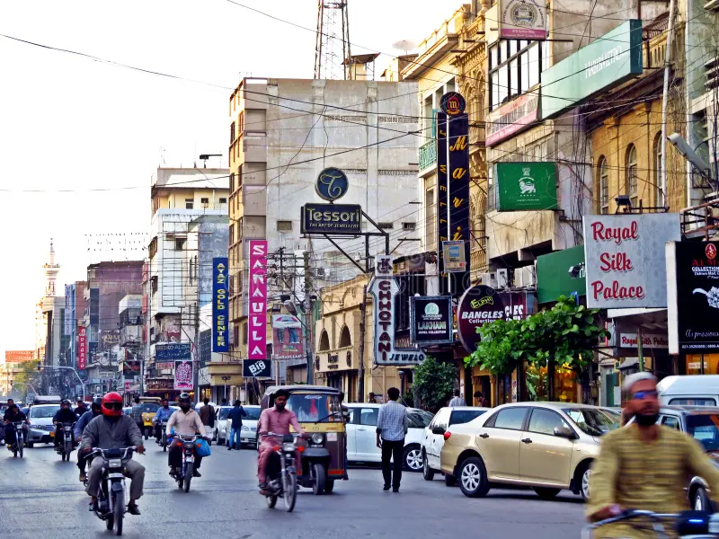
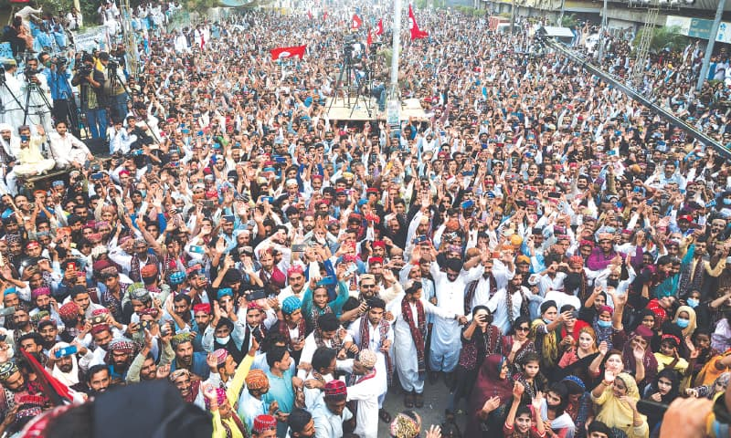
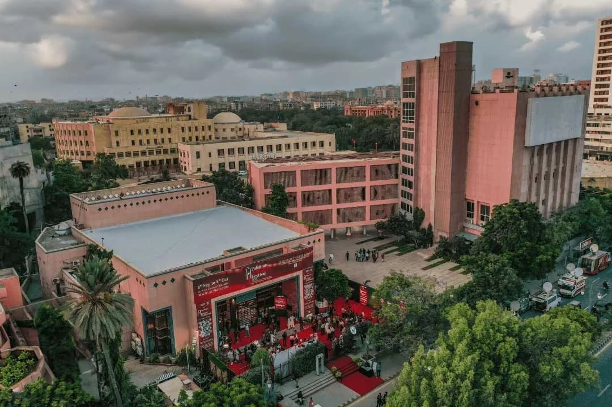

Karachi – Lifestyle & Culture

Karachi Street Life
- Karachi is a fast-paced city with lively streets and markets.
- Residents balance work and leisure, enjoying parks, beaches, and cultural events.
- Nightlife and commercial hubs are always active, reflecting city energy.
- People are hardworking and entrepreneurial, contributing to Pakistan’s economy.
- The city represents the dynamic urban lifestyle of Pakistan.
- Karachi hosts diverse cultural events, art exhibitions, and festivals.
- People from different ethnic backgrounds live together harmoniously.
- Traditional celebrations and modern festivals reflect city’s diversity.
- Food streets like Burns Road showcase Karachi’s culinary richness.
- Educational and artistic institutions contribute to intellectual growth.

Karachi Cultural Events

Arts & Education
- Karachi hosts theatres, music concerts, and film festivals.
- Art galleries and museums preserve cultural heritage.
- Educational institutions provide learning and creative opportunities.
- The city encourages literature, arts, and intellectual expression.
- Urban lifestyle and modernity blend with cultural richness.